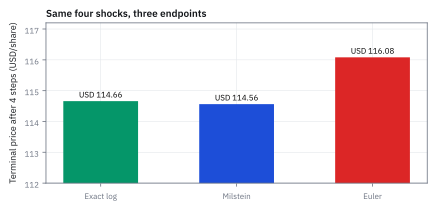

13.8 Simulating Stochastic Differential Equations — Euler, Milstein, and Exact Schemes
การจำลอง SDE มีความคลาดสองก้อน: ก้อนจากจำนวนเส้นทางที่หดเมื่อสุ่มมากขึ้น กับก้อนจากความยาวก้าวที่สุ่มเท่าไรก็ไม่หาย หน้านี้สร้างสามสูตรเดินก้าว แล้ววัดก้อนที่สองให้เห็นเป็นตัวเลข
หุ้นสมมติ \$100 drift 12% ความผันผวน 28% ต่อปี (ตัวเดียวกับรูปของ 13.2) ทีมหนึ่งจำลองหนึ่งปีด้วยสูตร Euler แค่ 4 ก้าว เส้นทางหนึ่งได้ \$116.08 ขณะที่สูตรจริงบนเลขสุ่มชุดเดียวกันได้ \$114.66 หัวหน้าบอกว่าไม่เป็นไร สุ่ม 1,000,000 เส้นทางแล้วเฉลี่ย ความคลาดจะหักล้างกันหมด และช่วงความเชื่อมั่น 95% จะแคบราว ±\$0.06 ช่วงนั้นจะครอบค่าเฉลี่ยจริง \$112.75 ไหม?
ลองตอบก่อนเปิดเฉลย
ไม่ครอบ ความคลาดรายเส้นส่วนใหญ่หักล้างกันจริง แต่เหลือ bias ที่คิดได้ตรง ๆ: ค่าเฉลี่ยของ Euler 4 ก้าวคือ $100(1.03)^4=\$112.55$ ต่ำกว่าค่าจริง \$0.20 หรือ 6.4 เท่าของ SE (\$0.031) ช่วงความเชื่อมั่นจึงแคบรอบตัวเลขที่ผิด เพิ่มเส้นทางเท่าไรก็ไม่ช่วย ต้องซอยก้าว: ที่ 252 ก้าว bias เหลือ \$0.0032 หรือใช้สูตรจริงซึ่งไม่มี bias เลย
สิ่งที่เราจะสร้าง
ทั้งบทนี้ใช้การสุ่มตรวจผลมาหลายครั้ง (13.2, 13.4, 13.5 และ 13.7) หน้านี้หันมาตรวจตัวเครื่องสุ่มเอง: 13.2 ขั้นที่ 1 นิยาม SDE เป็นสูตรก้าวเล็ก ๆ ซึ่งก็คือ Euler ถ้าก้าวยาวจริง สูตรนั้นคลาดเท่าไร ใช้ Taylor แบบสุ่มของ 13.2 กับ integral ของ 13.3 สร้างสูตรที่ดีกว่าชื่อ Milstein แล้วเทียบกับสูตรจริงของ 13.2 และ 13.4
เริ่มจากสี่ก้าวด้วยมือด้วยเลขสุ่มชุดเดียวกันทั้งสามสูตร อธิบายว่าทำไม Euler สูงไป นิยามความแม่นสองแบบ วัดอัตราที่ความคลาดหดจากการสุ่ม 20,000 เส้นทาง คิด bias ของค่าเฉลี่ยแบบตรงเป๊ะเพื่อตอบโจทย์เปิดเรื่อง แล้วจบที่ราคาติดลบและการเลือกสูตรบนโต๊ะ
ศัพท์ที่ใช้ในหัวข้อนี้
- Euler–Maruyama scheme
- สูตรเดินก้าวที่อ่าน drift และตัวคูณของ $dW$ ที่ต้นก้าวแล้วถือว่าคงที่ทั้งก้าว คือนิยามของ SDE ใน 13.2 ขั้นที่ 1 ใช้ได้กับทุก SDE ด้วยโค้ดที่ง่ายที่สุด
- Milstein scheme
- Euler บวกพจน์แก้ $\tfrac12bb'\big((\Delta W)^2-\Delta t\big)$ ที่คิดว่าตัวคูณของ $dW$ เปลี่ยนไปตามค่าที่ขยับระหว่างก้าว ใช้ลดความคลาดของเส้นทางเดี่ยว
- Exact scheme
- สุ่มจากการกระจายจริงของแบบจำลองในแต่ละก้าว เช่นสูตร exponential ของ GBM หรือ Normal ของ Vasicek ไม่มีความคลาดจากความยาวก้าวเลย
- Strong และ weak error
- strong error วัดว่าเส้นทางที่จำลองห่างจากเส้นทางจริงบนเลขสุ่มชุดเดียวกันเท่าไร weak error วัดแค่ว่าค่าเฉลี่ยของสิ่งที่สนใจเพี้ยนเท่าไร การตั้งราคาต้องการแบบหลัง
- Discretization bias
- ความคลาดเชิงระบบจากการใช้ก้าวยาวจำกัด ไม่หายเมื่อเพิ่มจำนวนเส้นทาง ต้องตรวจด้วยการซอยก้าวถี่ขึ้น
- Common random numbers
- ใช้เลขสุ่มชุดเดียวกันกับทุกสูตรที่เทียบกัน ความต่างที่เห็นจึงมาจากสูตร ไม่ใช่จากโชค
สัญลักษณ์และหน่วย
| สัญลักษณ์ | ความหมาย | หน่วย |
|---|---|---|
| $X_k,\ a(X_k),\ b(X_k)$ | ค่าที่ก้าวที่ $k$, drift และตัวคูณของ $dW$ ที่ต้นก้าว | หน่วยของตัวแปร, ต่อปี, ต่อ $\sqrt{\text{yr}}$ |
| $b'(X_k)$ | อัตราที่ตัวคูณของ $dW$ เปลี่ยนเมื่อระดับขยับ | ต่อ $\sqrt{\text{yr}}$ |
| $\Delta t,\ n$ | ความยาวก้าว และจำนวนก้าวในหนึ่งปี | ปี, นับ |
| $\Delta W_k,\ Z_k$ | การขยับของ Brownian motion ในก้าวที่ $k$ และเลขสุ่ม $\mathcal N(0,1)$ ที่สร้างมัน | $\sqrt{\text{yr}}$, ไม่มีหน่วย |
| $S^E,\ S^M,\ S^X$ | ราคาจาก Euler, Milstein และสูตรจริง | \$ ต่อหุ้น |
| $\mu,\ \sigma$ | drift และความผันผวน | ต่อปี, ต่อ $\sqrt{\text{yr}}$ |
ขั้นที่ 1 — การขยับในโค้ด: คูณเลขสุ่มด้วยรากของก้าว
ทุกสูตรเริ่มจากการสร้าง $\Delta W$ variance ของมันต้องเท่ากับความยาวก้าว (9.2) จึงคูณเลขสุ่มมาตรฐานด้วย $\sqrt{\Delta t}$ ใช้หนึ่งปีสี่ก้าว และเลขสุ่มสี่ตัวที่จะใช้ร่วมกันทุกสูตรในหน้านี้
ถ้าเผลอคูณด้วย $\Delta t$ แทน $\sqrt{\Delta t}$ ก้าวรายวันจะให้ความผันผวนต่อปีแค่ $0.28/\sqrt{252}=1.76\%$ แทน 28% เล็กไป 16 เท่า ทั้งที่กราฟเส้นทางยังดูสมเหตุสมผล (pitfall ข้อแรก)
ขั้นที่ 2 — Euler และพจน์แก้ของ Milstein
Euler คือนิยาม SDE ของ 13.2 ขั้นที่ 1 ตรง ๆ: อ่าน $a$ และ $b$ ที่ต้นก้าวแล้วตรึงไว้ทั้งก้าว สิ่งที่มันทิ้งคือ $b$ เปลี่ยนไปเมื่อ $X$ ขยับระหว่างก้าว Milstein เก็บผลนั้นด้วย Taylor หนึ่งพจน์ของ $b$ แทนการขยับด้วยส่วนสุ่มของมัน แล้วใช้ integral ของ 13.3 ขั้นที่ 7 ในหนึ่งก้าว
บรรทัดที่สองใช้ $X_s-X_k\approx b\,(W_s-W_k)$ ส่วน drift ของการขยับเล็กกว่าอีกขั้นจึงทิ้งได้ บรรทัดที่สามคือ $\int W\,dW=\tfrac12(W^2-T)$ ของ 13.3 ในหนึ่งก้าว การหัก $\Delta t$ ทำให้พจน์แก้เฉลี่ยศูนย์ Milstein จึงดัดเส้นทางให้ตรงขึ้นโดยไม่ย้ายค่าเฉลี่ย
ขั้นที่ 3 — สามสูตรของ GBM คือ Taylor ของสูตรจริงที่ตัดคนละที่
GBM มี $b=\sigma S$ จึงได้ $b'=\sigma$ และพจน์แก้ $\tfrac12\sigma^2S\big((\Delta W)^2-\Delta t\big)$ สูตรจริงมาจาก 13.2 ขั้นที่ 6 ให้ $u$ เป็นเลขชี้กำลังของมัน กระจาย $e^u$ ถึงอันดับสอง โดย $u^2=\sigma^2(\Delta W)^2$ บวกพจน์ขนาด $\Delta t^{3/2}$ ที่ทิ้งได้
$-\tfrac12\sigma^2\Delta t$ จาก drift ของ log รวมกับ $+\tfrac12\sigma^2(\Delta W)^2$ จากกำลังสอง ได้พจน์แก้ของ Milstein พอดี Milstein คือสูตรจริงที่ตัดที่อันดับสอง Euler ตัดเร็วกว่าหนึ่งขั้น และสูตรจริงเป็น exponential จึงไม่ติดลบ ส่วนอีกสองสูตรเป็นเส้นตรงของ $\Delta W$ จึงติดลบได้ (ขั้นที่ 9)
ขั้นที่ 4 — เดินสี่ก้าวด้วยมือ: เลขสุ่มชุดเดียว สามสูตร
โจทย์ให้อะไรมาบ้าง: $S_0=\$100$, $\mu=0.12$, $\sigma=0.28$, $\Delta t=0.25$ จึงได้ $\mu\Delta t=0.03$ และ $\tfrac12\sigma^2=0.0392$ ใช้ $\Delta W$ ของขั้นที่ 1 ก้าวแรกของแต่ละสูตรคิดได้ด้วยมือ แล้วเดินต่อจนครบสี่ก้าว
| ก้าว | $\Delta W_k$ | Euler $S^E$ | Milstein $S^M$ | สูตรจริง $S^X$ |
|---|---|---|---|---|
| เริ่ม | — | 100.0000 | 100.0000 | 100.0000 |
| 1 | +0.25 | 110.0000 | 109.2650 | 109.4393 |
| 2 | −0.60 | 94.8200 | 94.6576 | 94.4027 |
| 3 | +0.40 | 108.2844 | 107.7650 | 107.7453 |
| 4 | +0.15 | 116.0809 | 114.5630 | 114.6599 |
คำตอบ: ปลายทาง Euler \$116.0809 สูงกว่าสูตรจริงราว 1.24% Milstein \$114.5630 ต่ำกว่าแค่ 0.084% แม่นกว่า 14.7 เท่าบนเลขสุ่มชุดเดียวกัน ด้วยงานเพิ่มแค่พจน์เดียวต่อก้าว
ตรวจเองใน 10 วินาที: ก้าวแรกของ Milstein หัก $0.0392\times0.1875\times100=0.735$ ออกจาก Euler เพราะ $(\Delta W)^2=0.0625$ น้อยกว่า $\Delta t=0.25$ และสูตรจริงปลายทางคือ $100e^{0.0808+0.28(0.2)}=100e^{0.1368}=114.66$ ใช้แค่ผลรวม $\sum\Delta W=0.2$
Figure 13.8a — เลขสุ่มชุดเดียวกัน ปลายทางสามแบบ

ขั้นที่ 5 — ทำไม Euler สูงไป: เส้นทางนี้มีผลรวมกำลังสองน้อยกว่าหนึ่งปี
เทียบ log ของผลคูณตัวคูณ Euler กับ log ของสูตรจริง แล้วใช้ $\ln(1+x)\approx x-\tfrac12x^2$ ดูว่าส่วนต่างมาจากไหน ตัวคูณของ Euler สี่ก้าวคือ 1.100, 0.862, 1.142 และ 1.072
ถ้าใช้แค่อันดับสอง log ของตัวคูณ Euler หัก $\tfrac12\sigma^2$ คูณผลรวมกำลังสองของการขยับที่เกิดจริง แต่สูตรจริงหัก $\tfrac12\sigma^2$ คูณเวลาเต็ม เส้นทางนี้มี $\sum(\Delta W)^2=0.605$ น้อยกว่าหนึ่งปี Euler จึงหักน้อยไป ค่าประมาณอันดับสองให้ 0.0155 พจน์อันดับสูงกว่าหักลงเหลือ 0.0123 ที่เห็นจริง
นี่คือบทเรียนของ 13.1 ในอีกรูป: กำลังสองของการขยับเท่ากับเวลาเมื่อรวมหลายก้าว แต่สี่ก้าวยังแกว่งได้มาก (SD ของ $Q_4$ คือ 0.707)
ขั้นที่ 6 — ความแม่นสองแบบ และทำไม Euler ได้ค่าเฉลี่ยดีกว่าได้เส้นทาง
สองนิยามข้างล่างวัดคนละอย่าง: strong error ดูเส้นทางเทียบเส้นทางบนเลขสุ่มชุดเดียวกัน weak error ดูแค่ค่าเฉลี่ย ตัวเลขชี้กำลัง $p$ บอกว่าความคลาดหดเร็วแค่ไหนเมื่อซอยก้าว แล้วดูพจน์ $\epsilon_k$ ที่ Euler ทิ้งไป
พจน์ที่ทิ้งเฉลี่ยศูนย์ทุกก้าว เมื่อเฉลี่ยหลายเส้นทางจึงหักล้างกัน แต่บนเส้นทางเดียวมันสะสมแบบรากของจำนวนก้าว (ผลรวมของก้อนอิสระ 1.4) ได้ขนาด $\Delta t^{1/2}$ Euler จึงมี $p_s=\tfrac12$ แต่ weak error มาจากพจน์ที่เล็กกว่า ได้ $p_w=1$
Milstein เก็บ $\epsilon_k$ ไว้จึงได้ $p_s=1$ ส่วน $p_w$ ยังเป็น 1 เท่า Euler ตัวเลขอันดับเหล่านี้เป็นผลมาตรฐานสำหรับ SDE ที่ $a$ และ $b$ เรียบ ยกมาใช้ แล้ววัดจริงในขั้นที่ 7 และ 8
ขั้นที่ 7 — วัด strong error จริง: 20,000 เส้นทาง ห้าขนาดก้าว
โจทย์ให้อะไรมาบ้าง: โค้ดท้ายหน้าสร้างเส้นทาง Brownian ละเอียด 64 ก้าวต่อปี 20,000 เส้นด้วย seed 138 แล้วรวมก้าวเล็กเป็นก้าวใหญ่ให้ได้ 4, 8, 16, 32 และ 64 ก้าว ทุกสูตรใช้การขยับชุดเดียวกัน และสูตรจริงใช้ปลายทาง $W_1$ เดียวกัน วัดค่าเฉลี่ยของ $|S-S^X|$ เป็นดอลลาร์
| จำนวนก้าว | Euler | Milstein |
|---|---|---|
| 4 | 2.393 | 0.751 |
| 8 | 1.713 | 0.388 |
| 16 | 1.237 | 0.197 |
| 32 | 0.876 | 0.0997 |
| 64 | 0.621 | 0.0501 |
คำตอบ: ทุกครั้งที่ก้าวสั้นลงครึ่งหนึ่ง ความคลาดของ Euler หารด้วย 1.40, 1.39, 1.41 และ 1.41 ใกล้ $\sqrt2=1.414$ ของ $p_s=\tfrac12$ ส่วน Milstein หารด้วย 1.93, 1.97, 1.98 และ 1.99 ใกล้ 2 ของ $p_s=1$ ที่ 64 ก้าว Milstein แม่นกว่า Euler 12 เท่า
ตรวจเองใน 10 วินาที: จาก 4 ถึง 64 ก้าวคือซอยถี่ขึ้น 16 เท่า Euler ควรดีขึ้น $\sqrt{16}=4$ เท่า ($2.393/0.621=3.85$) และ Milstein ควรดีขึ้น 16 เท่า ($0.751/0.0501=15.0$)
Figure 13.8b — ความชันของ strong error บนแกน log

ขั้นที่ 8 — คำตอบของโจทย์เปิดเรื่อง: bias ของค่าเฉลี่ยแบบตรงเป๊ะ
โจทย์ให้อะไรมาบ้าง: ค่าเฉลี่ยของ Euler คิดได้โดยไม่ต้องสุ่ม ทุกก้าวคูณด้วย $1+\mu\Delta t+\sigma\Delta W$ ซึ่งเฉลี่ย $1+\mu\Delta t$ และแต่ละก้าวอิสระกัน ค่าเฉลี่ยของผลคูณจึงเป็นผลคูณของค่าเฉลี่ย พจน์แก้ของ Milstein เฉลี่ยศูนย์ จึงได้ค่าเฉลี่ยเดียวกัน ค่าจริงคือ $S_0e^{\mu}$ (13.2)
คำตอบ: Euler 4 ก้าวเฉลี่ย \$112.5509 ต่ำกว่าค่าจริง \$112.7497 อยู่ \$0.1988 ที่ 1,000,000 เส้นทาง SE คือ $31.02/1{,}000=\$0.031$ ช่วง 95% คือ $112.55\pm0.061$ ซึ่งไม่ครอบ \$112.75 bias เท่ากับ 6.4 SE และคงที่ไม่ว่าสุ่มกี่เส้น ทุกครั้งที่ก้าวสั้นลงครึ่งหนึ่ง bias หารด้วยราว 2 คือ $p_w=1$ ที่ 252 ก้าวเหลือ \$0.0032
ตรวจเองใน 10 วินาที: $1.03^4=1.12551$ และ $e^{0.12}=1.12750$ ต่างกัน 0.00199 คูณ 100 ได้ราว \$0.20
Figure 13.8c — ความคลาดสองก้อน: จำนวนเส้นทางลดได้แค่ก้อนเดียว

ขั้นที่ 9 — เมื่อไร Euler ให้ราคาติดลบ
ตัวคูณของ Euler เป็นเส้นตรงของ $Z$ จึงติดลบได้เมื่อ $Z$ ลบมากพอ แก้หาเกณฑ์ ($\sigma\sqrt{\Delta t}\gt0$ จึงหารได้โดยไม่กลับทิศ) แล้วลองสามกรณี: โจทย์นี้ หุ้นผันผวน 80% ที่ก้าวละหนึ่งปี และตัวเดียวกันที่ก้าวละเดือน
ในโจทย์หลักต้องได้เลขสุ่มต่ำกว่า −7.36 ซึ่งแทบไม่เกิด แต่หุ้นที่ผันผวน 80% จำลองก้าวละปี ราวหนึ่งในสิบสองเส้นทางได้ราคาติดลบ แล้ว log ของราคาและรากของราคาพังทั้งชุด ซอยเป็นรายเดือนเหลือโอกาสราว 0.0073% ต่อปี (12 ก้าว) ทางที่ดีกว่าคือไม่ใช้ Euler กับราคาดิบเลย
ขั้นที่ 10 — สูตรจริงของ Vasicek และเมื่อ Milstein เท่ากับ Euler
13.4 ให้การกระจายของ Vasicek ที่เวลาใดก็ได้ ใช้มันเป็นสูตรก้าวที่ตรงเป๊ะ: เริ่มจาก $r_k$ แล้วใช้ $m$ และ $v$ ของ 13.4 ขั้นที่ 2 และ 5 กับเวลา $\Delta t$ ส่วน Milstein ของ Vasicek มี $b=\sigma_V$ คงที่ จึงได้ $b'=0$
ก้าวรายวันของ Euler กับของสูตรจริงต่างกันน้อยมาก (SD ต่างกัน 0.16%) แต่สูตรจริงใช้ก้าวยาวเท่าไรก็ได้ สำหรับพันธบัตรห้าปี ก้าวเดียวห้าปีก็ตรงเป๊ะ Milstein ไม่ช่วย Vasicek เลย และการที่ Milstein ตรงกับ Euler ก็ไม่ได้แปลว่าทั้งคู่ตรงกับคำตอบจริง
คำถามที่ควรถามออกมาดัง ๆ
ถ้า Euler ได้ค่าเฉลี่ยดีพอ ทำไมต้องสนใจ strong error? เพราะบางงานใช้เส้นทางเดี่ยวตรง ๆ: การหา delta ด้วยการขยับราคาเริ่มต้นแล้วจำลองซ้ำด้วยเลขสุ่มชุดเดิม ความคลาดของเส้นทางจะเข้าไปในผลต่างเต็ม ๆ และสัญญาที่ขึ้นกับทั้งเส้นทาง เช่น barrier ไวต่อตำแหน่งของเส้นทางมาก
ทำไมไม่ใช้สูตรจริงทุกครั้ง? เพราะมีแค่แบบจำลองไม่กี่ตัวที่มีสูตรจริง: GBM, Vasicek และ CIR (ผ่านการกระจาย noncentral chi-square) แบบจำลองความผันผวนสุ่มอย่าง Heston (14.7) ไม่มีสูตรก้าวที่ง่าย ต้องใช้ Euler หรือ Milstein แล้วตรวจ bias ด้วยการซอยก้าว
รู้ได้อย่างไรว่าก้าวสั้นพอ? รันสองขนาดก้าว เช่น $n$ กับ $2n$ ด้วยเลขสุ่มชุดเดิม ถ้า $p_w=1$ bias ของ $n$ ประมาณได้เป็นสองเท่าของผลต่างระหว่างสองรัน ขั้นที่ 8: ผลต่างระหว่าง 4 กับ 8 ก้าวคือ $0.1988-0.1004=0.0984$ ประมาณ bias ของ 8 ก้าวได้ 0.098 ใกล้ 0.1004 ที่คิดตรง ๆ
ความผิดที่ให้ตัวเลขผิดโดยไม่มีใครเตือน
คูณเลขสุ่มด้วย $\Delta t$ แทน $\sqrt{\Delta t}$: ก้าวรายวันให้ความผันผวนต่อปี 1.76% แทน 28% ราคา option ทุกตัวถูกตีต่ำไปมาก ตรวจได้ทันทีด้วย realized variance ของเส้นทางที่จำลอง (13.1 ขั้นที่ 10) ซึ่งต้องใกล้ $\sigma^2T$
เชื่อช่วงความเชื่อมั่นเรื่อง bias ของก้าว: Euler 4 ก้าวกับ 1,000,000 เส้นทางให้ $112.55\pm0.06$ ที่ไม่ครอบค่าจริง \$112.75 ช่วงความเชื่อมั่นวัดได้แค่ความคลาดจากการสุ่ม ต้องรายงาน bias จากการซอยก้าวแยกอีกก้อน
เทียบสูตรด้วยเลขสุ่มคนละชุด: สองสูตรในขั้นที่ 8 มีค่าเฉลี่ยเท่ากันทุกประการ แต่ถ้าสุ่มแยกกันคนละ 20,000 เส้น ผลต่างของค่าเฉลี่ยจะแกว่งด้วย SE ราว $\sqrt2\times31/141=0.31$ ดอลลาร์ ใหญ่กว่า weak bias ที่อยากวัด ต้องใช้ common random numbers เสมอ
ใช้ทำอะไรบนโต๊ะจริง
| สถานการณ์ | สูตรที่ควรใช้ | เหตุผล |
|---|---|---|
| GBM และเงินที่จ่ายขึ้นกับราคาตอนจบ | สูตรจริงก้าวเดียวถึงวันครบกำหนด | ไม่มี bias และเร็วที่สุด (13.7 ขั้นที่ 7) |
| GBM และเงินที่จ่ายขึ้นกับทั้งเส้นทาง | สูตรจริงทีละขั้นตามวันที่ต้องสังเกตราคา ถ้ามี barrier ที่เฝ้าดูตลอดเวลา เพิ่ม Brownian bridge | แต่ละก้าวยังไม่มี bias ส่วน Brownian bridge สุ่มว่าเส้นทางระหว่างสองจุดที่รู้ค่าแล้วแตะ barrier หรือไม่ โดยไม่ต้องซอยก้าวถี่ |
| Vasicek | สูตรจริงของขั้นที่ 10 | ก้าวยาวเท่าไรก็ตรง |
| CIR | สุ่มจากการกระจายจริง หรือ Euler แบบ full truncation (13.4) | Euler ธรรมดาทำให้รากของค่าติดลบพัง |
| ไม่มีสูตรจริง | Euler บน log ของตัวแปร หรือ Milstein แล้วตรวจสองขนาดก้าว | กันค่าติดลบ และวัด bias ได้ |
งบความคลาดของทุกราคาจาก Monte Carlo จึงมีสองบรรทัดเสมอ: SE จากจำนวนเส้นทาง และ bias จากขนาดก้าว 17.5 จะดูการสรุปผลจากการสุ่มและ bootstrap อย่างเป็นระบบ
สามโจทย์ตรวจความเข้าใจ
1. คิดก้าวที่สองของ Milstein ในตารางของขั้นที่ 4 ด้วยมือ จาก \$109.265 และ $\Delta W=-0.60$
เฉลย
ตัวคูณคือ $1+0.03+0.28(-0.60)+0.0392(0.36-0.25)=1+0.03-0.168+0.004312=0.866312$ คูณ 109.265 ได้ \$94.6576 ตรงกับตาราง ก้าวนี้ $(\Delta W)^2=0.36$ มากกว่า $\Delta t$ พจน์แก้จึงเป็นบวก
2. ถ้าจำลองหุ้นตัวนี้ด้วย Euler รายเดือน (12 ก้าว) bias ของค่าเฉลี่ยราคาปลายปีคือเท่าไร?
เฉลย
$100e^{0.12}-100(1.01)^{12}=112.7497-112.6825=\$0.0672$ อยู่ระหว่าง 0.1004 ของ 8 ก้าวกับ 0.0505 ของ 16 ก้าว และประมาณได้จาก $p_w=1$ ว่า $0.1988\times4/12=0.066$
3. หุ้นที่ผันผวน 80% จำลองด้วย Euler ก้าวละเดือน โอกาสที่เส้นทางหนึ่งจะมีราคาติดลบภายในปีคือเท่าไร?
เฉลย
แต่ละก้าวติดลบเมื่อ $Z\lt-(1+0.01)/(0.80\sqrt{1/12})=-1.01/0.23094=-4.373$ โอกาส $\Phi(-4.373)=0.0000061$ ต่อก้าว สิบสองก้าวได้ $1-(1-0.0000061)^{12}=0.000073$ หรือ 0.0073% ลดจาก 8.08% ของก้าวละปีกว่าพันเท่า
คำนวณซ้ำด้วย JavaScript
รันใน Node.js ได้โดยไม่ต้องติดตั้งอะไร โค้ดเดินสามสูตรบนเลขสุ่มสี่ตัวของขั้นที่ 4 วัด strong error ที่ห้าขนาดก้าวด้วยเลขสุ่มชุดเดียวกันที่มี seed คิด bias ของค่าเฉลี่ยแบบตรงเป๊ะ และโอกาสที่ Euler ให้ราคาติดลบ ฟังก์ชันปฏิเสธ input ที่ไม่มีความหมาย และพิมพ์ JSON บรรทัดเดียว
// Standard Normal CDF: Simpson's rule on the bell curve from 0 to |x| (1.9).
function Phi(x) {
if (!Number.isFinite(x) || Math.abs(x) > 8) throw new RangeError('Phi needs a finite score between -8 and 8');
const n = 4000, h = Math.abs(x) / n, phi = z => Math.exp(-z * z / 2) / Math.sqrt(2 * Math.PI);
let s = 0;
for (let i = 0; i <= n; i++) s += (i === 0 || i === n ? 1 : i % 2 ? 4 : 2) * phi(i * h);
return 0.5 + Math.sign(x) * s * h / 3;
}
function checkModel(m) {
if (![m.S0, m.mu, m.sigma].every(Number.isFinite) || m.S0 <= 0 || m.sigma <= 0) throw new RangeError('Need S0 > 0, sigma > 0 and a finite mu');
}
// One step of each GBM scheme from S with step dt and Brownian increment dW.
const schemes = {
euler: (m, S, dt, dW) => S * (1 + m.mu * dt + m.sigma * dW),
milstein: (m, S, dt, dW) => S * (1 + m.mu * dt + m.sigma * dW + 0.5 * m.sigma * m.sigma * (dW * dW - dt)),
exact: (m, S, dt, dW) => S * Math.exp((m.mu - 0.5 * m.sigma * m.sigma) * dt + m.sigma * dW)
};
// Walk all three schemes on the same shocks z (common random numbers), dW = sqrt(dt) z.
function walk(m, z, T) {
checkModel(m);
if (!Array.isArray(z) || z.length === 0 || !z.every(Number.isFinite)) throw new TypeError('Need a nonempty list of finite shocks');
if (!(T > 0)) throw new RangeError('Need T > 0');
const dt = T / z.length, rows = [{euler: m.S0, milstein: m.S0, exact: m.S0}];
for (const x of z) {
const dW = Math.sqrt(dt) * x, prev = rows[rows.length - 1], next = {};
for (const k of Object.keys(schemes)) next[k] = schemes[k](m, prev[k], dt, dW);
rows.push(next);
}
return {dt, dW: z.map(x => Math.sqrt(dt) * x), rows};
}
// mulberry32 + Box-Muller: seeded standard Normals, the same generator as 13.1.
function normals(seed) {
let a = seed >>> 0, spare = null;
const u = () => {
a = (a + 0x6D2B79F5) >>> 0;
let t = Math.imul(a ^ (a >>> 15), a | 1);
t ^= t + Math.imul(t ^ (t >>> 7), t | 61);
return (((t ^ (t >>> 14)) >>> 0) + 0.5) / 4294967296;
};
return () => {
if (spare !== null) { const z = spare; spare = null; return z; }
const r = Math.sqrt(-2 * Math.log(u())), angle = 2 * Math.PI * u();
spare = r * Math.sin(angle);
return r * Math.cos(angle);
};
}
// Strong error E|S_scheme - S_exact| at T = 1 on the same Brownian path, for several step counts.
function strongErrors(m, stepList, paths, seed) {
checkModel(m);
if (!Number.isInteger(paths) || paths < 2) throw new RangeError('Need a whole number of paths >= 2');
const maxN = Math.max(...stepList);
if (!stepList.every(n => Number.isInteger(n) && n >= 1 && maxN % n === 0)) throw new RangeError('Step counts must be whole and divide the finest grid');
const z = normals(seed), out = stepList.map(n => ({n, euler: 0, milstein: 0}));
for (let p = 0; p < paths; p++) {
const fine = Array.from({length: maxN}, () => z() * Math.sqrt(1 / maxN));
stepList.forEach((n, j) => {
const r = maxN / n, dt = 1 / n;
let E = m.S0, M = m.S0, W = 0;
for (let k = 0; k < n; k++) {
let dW = 0;
for (let i = 0; i < r; i++) dW += fine[k * r + i];
E = schemes.euler(m, E, dt, dW); M = schemes.milstein(m, M, dt, dW); W += dW;
}
const X = m.S0 * Math.exp((m.mu - 0.5 * m.sigma * m.sigma) + m.sigma * W);
out[j].euler += Math.abs(E - X) / paths; out[j].milstein += Math.abs(M - X) / paths;
});
}
return out;
}
// Weak bias of the mean, exactly: E[S_Euler] = S0 (1 + mu dt)^n (the Milstein term has mean zero too).
function meanBias(m, n) {
checkModel(m);
if (!Number.isInteger(n) || n < 1) throw new RangeError('Need a whole number of steps n >= 1');
return m.S0 * Math.exp(m.mu) - m.S0 * (1 + m.mu / n) ** n;
}
// Chance that one Euler step makes the price negative: Z below -(1 + mu dt) / (sigma sqrt(dt)).
function negativeStep(m, dt) {
checkModel(m);
if (!(dt > 0)) throw new RangeError('Need dt > 0');
const z = -(1 + m.mu * dt) / (m.sigma * Math.sqrt(dt));
return {z, p: z < -8 ? 0 : Phi(z)};
}
const stock = {S0: 100, mu: 0.12, sigma: 0.28};
const hand = walk(stock, [0.5, -1.2, 0.8, 0.3], 1), last = hand.rows[4];
const logEuler = hand.dW.reduce((s, w) => s + Math.log(1 + 0.03 + 0.28 * w), 0);
const Q = hand.dW.reduce((s, w) => s + w * w, 0);
const strong = strongErrors(stock, [4, 8, 16, 32, 64], 20000, 138);
const sdEuler4 = Math.sqrt(1e4 * ((1.03) ** 2 + 0.28 * 0.28 * 0.25) ** 4 - (100 * 1.03 ** 4) ** 2);
const stress = negativeStep({...stock, sigma: 0.80}, 1), monthly = negativeStep({...stock, sigma: 0.80}, 1 / 12);
console.log(JSON.stringify({
hand: {dW: hand.dW, rows: hand.rows, logEuler, logExact: Math.log(last.exact / 100), gap: logEuler - Math.log(last.exact / 100),
Q, secondOrder: 0.5 * 0.28 * 0.28 * (1 - Q), errEuler: last.euler / last.exact - 1, errMilstein: last.milstein / last.exact - 1},
strong, strongRatios: strong.slice(1).map((s, i) => ({euler: strong[i].euler / s.euler, milstein: strong[i].milstein / s.milstein})),
weak: [4, 8, 16, 252].map(n => ({n, bias: meanBias(stock, n)})),
hook: {eulerMean: 100 * 1.03 ** 4, exactMean: 100 * Math.exp(0.12), sdEuler4, se: sdEuler4 / 1000, halfWidth: 1.96 * sdEuler4 / 1000,
biasInSE: meanBias(stock, 4) / (sdEuler4 / 1000)},
negative: {normal: negativeStep(stock, 0.25), stress, monthly, monthlyYear: 1 - (1 - monthly.p) ** 12},
wrongScaling: 0.28 * Math.sqrt(1 / 252),
vasicekStep: {decay: Math.exp(-0.8 / 252), sd: 0.012 * Math.sqrt((1 - Math.exp(-1.6 / 252)) / 1.6), eulerSD: 0.012 * Math.sqrt(1 / 252)},
exercises: {milsteinStep2: 1 + 0.03 - 0.168 + 0.0392 * (0.36 - 0.25), monthlyBias: meanBias(stock, 12)}
}));ที่มาที่ไป
ปี 1768 Leonhard Euler เดินสมการเชิงอนุพันธ์ที่ไม่สุ่มตามเส้นสัมผัสทีละขั้น ปี 1955 Gisiro Maruyama ขยายวิธีนี้ไปสมการสุ่มโดยบวกการขยับของ Brownian motion แต่ความแม่นของเส้นทางตกจากอันดับหนึ่งเหลือครึ่งหนึ่ง ปี 1974 Grigori Milstein เติมพจน์แก้จาก Taylor แบบสุ่มจนได้อันดับหนึ่งคืนมา ในแบบจำลองหลายตัวแปร พจน์แก้ของ Milstein ต้องใช้ integral ไขว้ของ Brownian motion หลายตัวซึ่งสุ่มยาก Euler จึงยังเป็นเครื่องมือหลักของงานจริง
ข้อจำกัด: สมมติอะไร และของจริงเป็นอย่างไร
| เรื่อง | หน้านี้สมมติว่า | ของจริง | ผลเวลาใช้งาน |
|---|---|---|---|
| อันดับความแม่น | $a$ และ $b$ เรียบ | เงินที่จ่ายหักมุม (digital, barrier) และ $\sqrt r$ ของ CIR ไม่เรียบที่ศูนย์ | อัตราที่เห็นจริงช้ากว่า $p_w=1$ ต้องวัดด้วยการซอยก้าว |
| แหล่งสุ่ม | Brownian motion ตัวเดียว | แบบจำลองหลายตัวแปร | Milstein ต้องการ integral ไขว้ที่สุ่มยาก มักถอยกลับไปใช้ Euler |
| ต้นทุนคำนวณ | ซอยก้าวได้ไม่จำกัด | งานโตตามจำนวนก้าวคูณจำนวนเส้นทาง | ต้องแบ่งงบระหว่าง bias กับ SE ให้สองก้อนพอ ๆ กัน |
สิ่งที่ควรตอบได้หลังอ่าน
- $\Delta W=\sqrt{\Delta t}\,Z$ เสมอ คูณด้วย $\Delta t$ ทำให้ความผันผวนรายวันเหลือ 1.76% แทน 28%
- Euler คือนิยาม SDE บนตาราง Milstein เติม $\tfrac12bb'\big((\Delta W)^2-\Delta t\big)$ และทั้งคู่คือ Taylor ของสูตรจริงของ GBM ที่ตัดคนละที่
- สี่ก้าวของหุ้น \$100: สูตรจริง \$114.66 Euler +1.24% Milstein −0.08% เพราะเส้นทางนี้มี $\sum(\Delta W)^2=0.605$ ไม่ใช่ 1
- วัดจริง: strong error ของ Euler หารด้วย 1.41 และของ Milstein หารด้วย 1.99 ทุกครั้งที่ก้าวสั้นลงครึ่งหนึ่ง
- bias ของค่าเฉลี่ยไม่หายด้วยการเพิ่มเส้นทาง: Euler 4 ก้าวต่ำไป \$0.20 หรือ 6.4 SE ที่ 1,000,000 เส้นทาง ต้องซอยก้าวหรือใช้สูตรจริง
บทที่ 14 จะใช้เครื่องมือทั้งบทนี้สร้างพอร์ตเลียนแบบของ option ได้สมการ Black–Scholes ซึ่งคือ PDE ของ 13.7 ที่ได้อีกทางจากการ hedge และจะใช้การสุ่มของหน้านี้ตรวจสูตรที่ได้